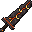
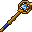
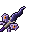

Extraordinary & God's Tool Weapons
The 15 relic weapons - 10 Extraordinary and 5 God's Tools, three per class - with their stats, their unique passives and where they come from.
What they are
These are the strongest weapons in the game, often just called relics. There are 15, three per class:
- 10 Extraordinary weapons (red), two per class.
- 5 God's Tools (gold), one per class.
Each has bigger fixed numbers than a Legendary weapon, four stat bonuses, and one passive of its own, shown on the tooltip. Every relic always has a skill socket for a skill gem. Each one is drawn from scratch and animated.



Class-locked
Like the Legendaries, a relic only answers to its own class. In anyone else's hands it deals no damage, gives no stats and its passive stays silent. It also has an item level and only works from that character level up (see gear).
Relics can't be changed. Orbs of Sockets, Orbs of Affixing and the forge all refuse them.
Passive damage
Passive damage grows with your character level. The base is 3 + 0.15 per level (7.5 at level 30), and each passive deals its own share of that. Starfall, for example, hits for 150% of the base, about 11 at level 30. It's spell damage, so it never triggers another on-hit passive.
The 15
Damage and speed are the values at item level 25. The weapon you get follows its own item level. Bows get Draw Power like every bow.
| Class | Tier | Weapon | Type | Damage / speed | Bonuses | Passive |
|---|---|---|---|---|---|---|
| Warrior | Extraordinary | Faultline | Sword | 15 / 1.1 | +8 Might, +7 Toughness, +5 Vitality, +4 Steadfast | Earthbreak: melee hits have a 1 in 4 chance to crack the ground with magma. Every monster within 3 blocks of the target is hurt, staggered and scorched. |
| Warrior | Extraordinary | The Drowned Anchor | Mace | 15 / 0.85 | +8 Fortitude, +7 Toughness, +5 Vitality, +4 Might | Hold Fast: below half health you get Resistance. Once every 15 seconds you also get 2 hearts of Absorption, and the anchor drags monsters within 4 blocks down. |
| Warrior | God's Tool | Eclipse | Axe | 18 / 0.85 | +10 Might, +8 Fortitude, +6 Toughness, +5 Vitality | Totality: every 5th melee hit the light goes out. Everything in a line 6 blocks ahead is struck hard, thrown up and marked by the dark. |
| Mage | Extraordinary | The Orrery | Staff | 5 | +9 Arcana, +6 Vitality, +5 Precision, +4 Fortitude | Starfall: every 4 seconds a star falls on a monster within 12 blocks, stunning it for a moment. |
| Mage | Extraordinary | Coldsong | Mage Blade | 9 / 1.6 | +8 Arcana, +6 Precision, +5 Swiftness, +4 Vitality | Shatter: melee hits have a 1 in 3 chance to freeze the target solid and throw ice at two more monsters nearby, chilling them. |
| Mage | God's Tool | The First Page | Staff | 6 | +11 Arcana, +7 Vitality, +6 Precision, +5 Steadfast | The Three Words: three words orbit you. Every 2 seconds they strike every monster within 4 blocks and leave it dazed. |
| Rogue | Extraordinary | Duskmoth | Dagger | 9 / 2.4 | +9 Ferocity, +7 Swiftness, +5 Precision, +4 Fortune | Nightfall: sneaking makes you invisible. The first hit out of it deals triple damage and blinds the target. |
| Rogue | Extraordinary | Bloodbriar | Dagger | 9 / 2.4 | +9 Ferocity, +7 Precision, +5 Vitality, +4 Fortune | Bleed: hits make the target bleed, taking damage every second for 4 seconds while thorns hold it. Hitting again starts the bleed over. |
| Rogue | God's Tool | The Final Hour | Dagger | 11 / 2.4 | +11 Ferocity, +8 Precision, +6 Swiftness, +5 Fortune | Midnight: hits on a monster below a quarter of its health end it. Bosses take half again instead. |
| Archer | Extraordinary | Stormwing | Bow | - | +9 Precision, +7 Swiftness, +5 Ferocity, +4 Vitality | Tailwind: while held you have Speed and Jump Boost. Arrow hits have a 1 in 4 chance of a gust that hurts and lifts every monster within 3 blocks, and they drift down slowly. |
| Archer | Extraordinary | Wyrmjaw | Bow | - | +9 Precision, +7 Ferocity, +5 Might, +4 Vitality | Dragonfire: arrow hits set the target alight. 1 in 5 bursts in dragonfire, burning and weakening every monster within 3 blocks. |
| Archer | God's Tool | The Sunwheel | Bow | - | +11 Precision, +8 Swiftness, +6 Ferocity, +5 Vitality | Judgement: every 4th arrow hit calls a pillar of light down on the target and everything within 3 blocks, dazzling them. A chime tells you when the next hit will judge. |
| Herald | Extraordinary | The Everbloom | Standard | 5 | +9 Vitality, +7 Arcana, +5 Fortune, +4 Steadfast | Spring's Breath: every 5 seconds, you and every player within 8 blocks get Regeneration. |
| Herald | Extraordinary | The Stag King's Totem | Standard | 5 | +8 Arcana, +7 Fortitude, +5 Vitality, +4 Might | War Chant: while held, you and every player within 8 blocks have Strength. In a fight the war drums sound and nearby monsters are cowed. |
| Herald | God's Tool | Phoenix Ascendant | Standard | 6 | +11 Vitality, +8 Arcana, +6 Fortitude, +5 Fortune | Rebirth: monsters within 4 blocks burn in its light every 2 seconds and catch fire. A player within 10 blocks who falls below 3 hearts is lifted to half health (each player once a minute). |
Archer class abilities that fire arrows also trigger a bow relic's on-hit passive.
Where they come from
A relic is always one of the receiver's class's weapons of that tier. A character with no class can't get one.
- The gear drop table: the God's Tool column of the rarity table (0.5% of gear drops at level 1, up to 1.5% at level 50) gives you your class's God's Tool. The Extraordinary column gives a rolled red piece of gear, not one of these weapons.
- Champions: 1 in 4,000 for an Extraordinary and 1 in 20,000 for a God's Tool, on top of their normal loot.
- Bosses: some of the great bosses have their own small chance.
- High-tier dungeon and raid clears, rolled for each player:
| Clear | Extraordinary | God's Tool |
|---|---|---|
| Key tier 4 | 1 in 125 | 1 in 1,000 |
| Key tier 5 (including Heroic raids) | about 1 in 60 | 1 in 500 |
Tiers 1-3 have no relic roll.
No duplicates: if a relic would drop that you already own (carried, in your ender chest, or on record as found), it rerolls into one of your class's that you don't have. A God's Tool you already own becomes an Extraordinary you don't. Only if you own them all does the duplicate drop.
Relics are not bound to you. A relic flies to its receiver and can then be traded, and the class lock decides who can use it.
Every Extraordinary or God's Tool weapon that drops is announced to everyone. That includes rolled Extraordinary weapons, and the finder gets a big title.
See also
Legendary weapons · Rarity · Gems · Weapons